About me

Jesús Manuel Olivas
@jmolivas | http://jmolivas.com
What is DS and what can do for me?
Display Suite is Graphic User Interface for managing fields, view modes and classes. Display Suite extend the display options "Manage Display" for every entity type.
Content items can be displayed using different view modes: Teaser, Full content, Print, RSS, etc. Teaser is a short format that is typically used in lists of multiple content items. Full content is typically used when the content is displayed on its own page.
You can define which fields are shown and hidden when an Entity content is displayed in each view mode, and define how the fields are displayed in each view mode.
http://drupal.org/project/dsFeatures
- User interface for managing fields, view modes and classes.
- Extend the display options for every entity type.
- Extras : Contains additional features for Display Suite.
- Enable Field Templates.
- Enable extra fields
- Change view modes for individual nodes.
- Create additional regions exposed as block.
- Add a hidden region to the layouts. Fields will be built but not printed.
- Views integration.
- Manage the layout of forms in Display Suite.
- Extend the display options for search results for Drupal Core or Apache Solr.
Administration
admin/structure/ds 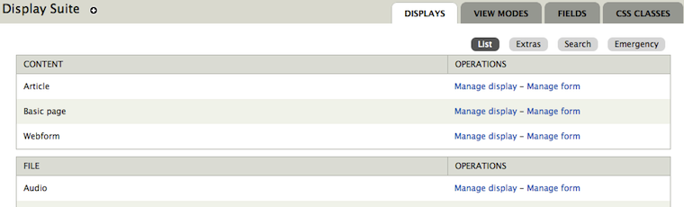
Extras: Enable Field Templates
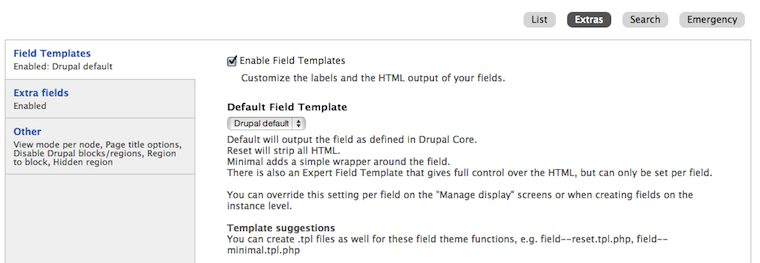
Customize the labels and the HTML output of your fields.
Extras: Enable extra fields
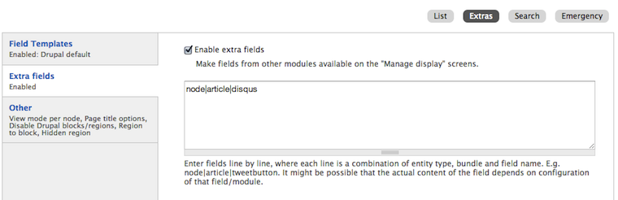
Make fields from other modules available on the "Manage display" screen. Loading disqus block by example.
Extras: Other
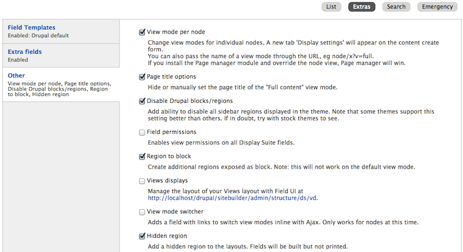
View mode per node, Page title options, Region to block, Hidden region
Available & custom "View Modes" for entity/node "Article"
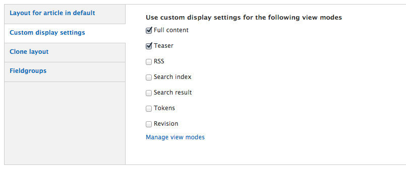
Teaser display for "Article"
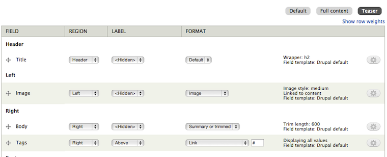
Full content display for "Article"
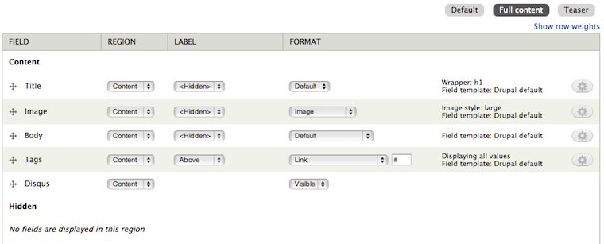
Add new "View Mode" to entity/node
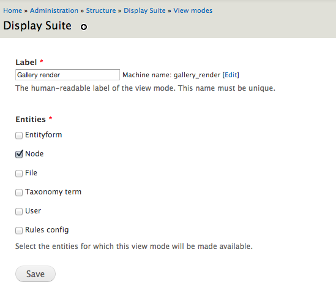
Manage Labels
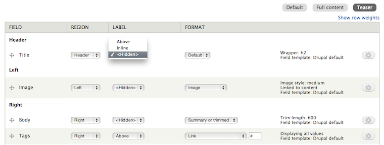
Allows to:
- Show/hide labels.
- Define label postion above/inline
Format field: Field Templates
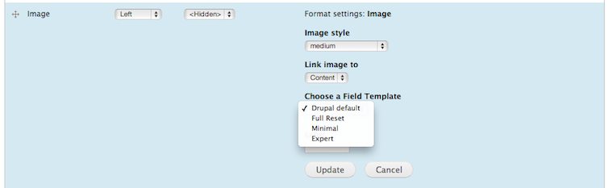
- Default: Default will output the field as defined in Drupal Core.
- Full Reset: Reset will strip all HTML avoiding some *div-itis o *div-ception.
- Minimal: Adds a simple wrapper around the field.
- There is also an Expert Field Template that gives full control over the HTML, but can only be set per field.
Format field: Expert Field Template
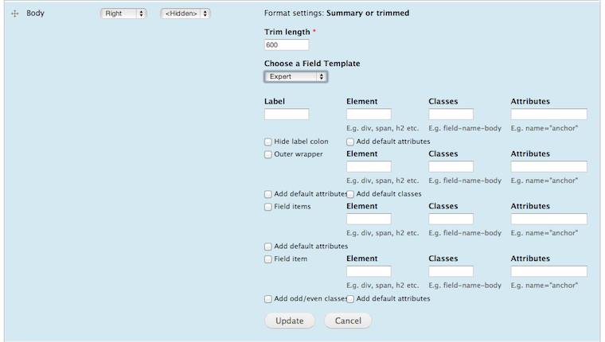
Allow customize/override element, wrapper and label output by field.
Format field: Manage format Field
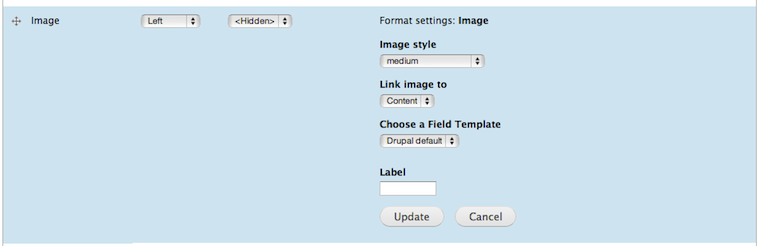
Customize element and certain options based on field type.
Views integration
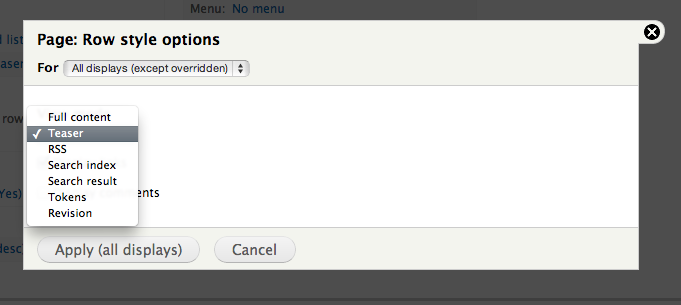
Manage the layout of forms
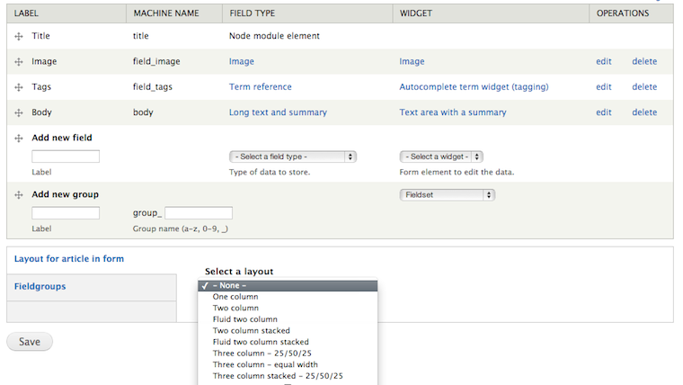
Extend the display options for search results for Drupal Core or Apache Solr.
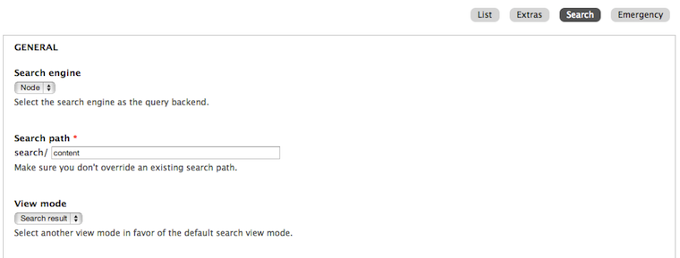
References
Slides maded with kinout
kinout on github
Fonts Bitter & Open Sans
Open Sans at google webfont directory
Bitter at google webfont directory
Thank You!
Stop hacking tpls, take full control of your site layout with Display Suite - SANDCamp January 2013
Jesús Manuel Olivas | @jmolivas | http://jmolivas.com